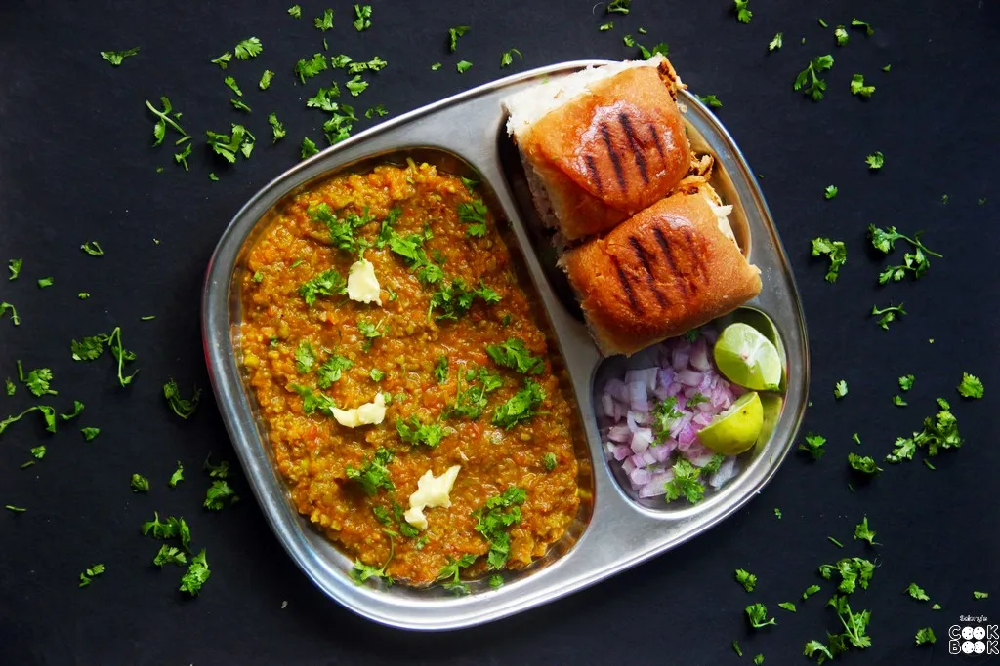

Pavbhaji

Description.
Pav Bhaji is a very famous dish from the Indian state Maharashtra. It is now a much loved street food all across
India. Bhaji is a mix of mashed vegetables and spices served with Pav which a form of a bread bun. Pav Bhaji is
generally served with a generous amount of butter, chopped onion and lemon.
Ingredients.
- 2 medium onions (finely chopped)
- 3 medium tomatoes (finely chopped)
- 1/2 cup cauliflower (roughly chopped)
- 1/2 cup green peas
- 1/2 cup green capsicum (roughly chopped)
- 1/2 cup potatoes (roughly chopped)
- 1 cup spring onions (white+green finely chopped)
- 1/2 cup carrots (roughly chopped)
- 1/2 cup french beans (roughly chopped)
- 1 tsp coriander powder
- 1/2 tsp turmeric powder
- 1/2 tsp red chilli powder
- 2 tbsp pav bhaji masala
- 1 tsp garam masala powder
- 1 tbsp ginger-garlic paste
- 1 tbsp butter
- Salt as per taste
- water (for boiling vegetables+gravy)
- 1/2 cup coriander leaves (finely chopped)
- pav (as per requirement)
Steps.
- In a pressure cooker, add all the vegetables except onions and tomatoes. Add salt and water. Pressure cook for 1-2 whistles.
- In a pan, heat some butter. Add few drops of oil to avoid burning of butter.
- Add finely chopped onions. Saute it for few minutes until it turns light brown in color.
- Add ginger-garlic paste and saute it until the raw aroma of the paste goes away.
- Now add, finely chopped tomatoes. Mix well and saute it for few seconds.
- Add turmeric powder, coriander powder and red chilli powder. Mix well and saute it for few seconds.
- Add pav bhaji masala and garam masala powder. Saute it until oil leaves on the sides. Add few drops of water if the mix gets too dry.
- Add all the boiled vegetables along with the stock. Mix well.
- Using a masher, mash all the vegetables in the pan.
- Add salt as required and butter (optional). Let it cook for 15-20 minutes on low flame. Keep stirring in between. Garnish it with Coriander leaves.
- Cut the pav's into half. Apply butter on both the sides. Grill it from both the sides until done.
- Serve hot Pav bhaji with lemon wedges and onions.
Thank you for Reaching this website.